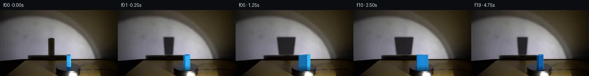
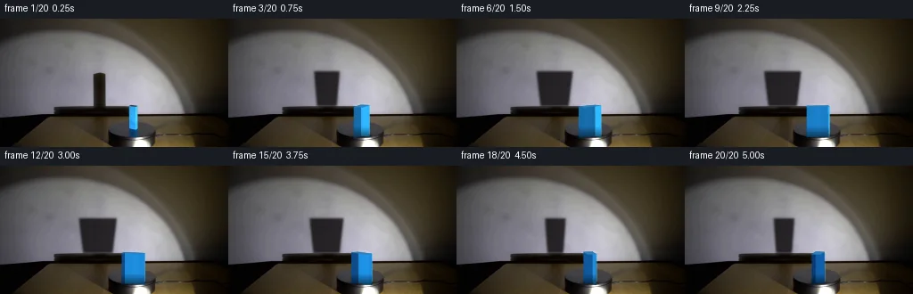
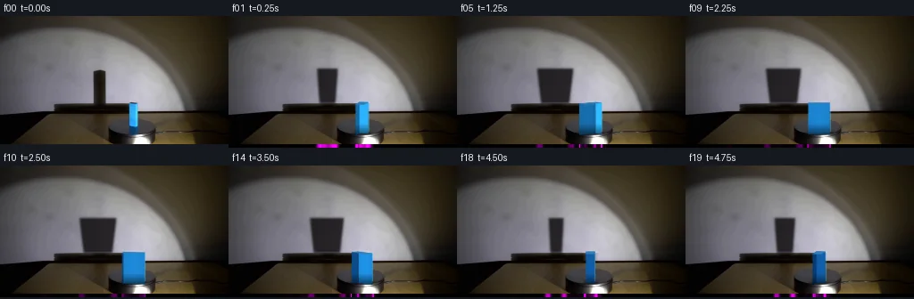

V0 · 初版 · 最终提交
![]()
Observable Generation Trace
把最终像素视频、Harness 冻结的每轮候选、真实工具事件和 Agent 自述放在同一页。可观测证据与模型自述分开标记，避免把“模型说它检查过”误当成真实工具调用。
![首帧]()
Static locked-off single-shot with fixed frame throughout filmed with constant framerate in real-time. The scene shows a realistic scientific demonstration. The scene only contains the described setup and actions. The blue rectangular block sits on the black, clockwise-rotating platform, and the spotlight points toward the block. A blue rectangular block rotates clockwise on the black platform while the spotlight casts a large shadow on the wall behind it.
首帧显示在左侧播放器初始画面。Track 权限、隔离和 tensor 一致性来自 run manifest，而不是 METHOD.md。
默认勾选初版和最终版；可选其他版本一起同步播放。仅检查图更新的连续重复快照已合并，回退旧视频仍保留为一次修订。
Observable events
来源：events.jsonl + run manifest
此 Track 禁止读取输出图片。逐轮预览由外部 Harness 自动冻结，只用于事后审计，生成 Agent 当时看不到这些页面。
Frozen candidates
每张图来自该 round 的真实 00 / 01 / 05 / 10 / 19 帧

pixels 8a28584735f2c5e3 · code d35d34ff779ff667
--- previous/generate.py +++ current/generate.py @@ -0,0 +1,286 @@ +#!/usr/bin/env python3 +"""Generate the 20-frame PixelWorld continuation using only first_frame.png. + +The source is numerically reconstructed into a locked clean plate. The block is an +analytic yawing cuboid, and its wall shadow is a magnified soft projection driven by +the same angle. All raster work is local NumPy/OpenCV/Pillow pixel processing. +""" + +from pathlib import Path + +import cv2 +import numpy as np +from PIL import Image, ImageDraw, ImageFont + +import artifact_io + + +ROOT = Path(__file__).resolve().parent +H, W = 144, 256 +N = 20 +SS = 4 + + +def feathered_polygon(points, blur=1.2): + """Return an antialiased 0..1 polygon mask at final resolution.""" + big = np.zeros((H * SS, W * SS), np.uint8) + pts = np.round(np.asarray(points, np.float32) * SS).astype(np.int32) + cv2.fillPoly(big, [pts], 255, lineType=cv2.LINE_AA) + mask = cv2.resize(big, (W, H), interpolation=cv2.INTER_AREA).astype(np.float32) / 255.0 + if blur: + mask = cv2.GaussianBlur(mask, (0, 0), blur) + return np.clip(mask, 0, 1) + + +def over(dst, color, alpha): + """Alpha composite an RGB color or image over float RGB dst.""" + a = np.asarray(alpha, np.float32)[..., None] + c = np.asarray(color, np.float32) + return dst * (1.0 - a) + c * a + + +def horizontal_repair(image, x0, x1, y0, y1, feather=3): + """Replace an occluder by interpolating its two horizontal boundaries. + + The wall and turntable are both smooth at the very small repaired spans, so this + retains row-wise illumination more faithfully than a generic content fill. + """ + out = image.astype(np.float32).copy() + left = image[y0:y1, x0 - 2:x0 + 1].astype(np.float32).mean(axis=1) + right = image[y0:y1, x1:x1 + 3].astype(np.float32).mean(axis=1) + n = x1 - x0 + u = np.linspace(0, 1, n, dtype=np.float32)[None, :, None] + fill = left[:, None, :] * (1 - u) + right[:, None, :] * u + # Bring across some tiny source texture, but remove large illumination structure. + tex_src = image[y0:y1, max(0, x0 - n):x0].astype(np.float32) + if tex_src.shape[1] == n: + smooth = cv2.GaussianBlur(tex_src, (0, 0), 2.0) + fill += 0.30 * (tex_src - smooth) + out[y0:y1, x0:x1] = fill + # Blend the repair boundary so no synthetic vertical seam remains. + mask = np.zeros((H, W), np.float32) + mask[y0:y1, x0:x1] = 1 + mask = cv2.GaussianBlur(mask, (0, 0), feather) + return image.astype(np.float32) * (1 - mask[..., None]) + out * mask[..., None] + + +def make_clean_plate(src): + # Remove the initial narrow wall shadow (approximately x=104..119, y=59..98). + plate = horizontal_repair(src, 102, 122, 56, 100, feather=2.0) + + # Remove the source block from the wall/deck. Row interpolation preserves the + # strong left-to-right lighting boundary that the block originally straddled. + plate = horizontal_repair(np.clip(plate, 0, 255).astype(np.uint8), + 140, 159, 95, 134, feather=1.4) + return np.clip(plate, 0, 255).astype(np.float32) + + +def draw_shadow(frame, theta): + """Draw a soft, large wall shadow from the cuboid's yaw silhouette.""" + apparent = 24.0 * abs(np.cos(theta)) + 10.0 * abs(np.sin(theta)) + # Near-light perspective magnifies the block silhouette onto the wall. + width_mid = 1.43 * apparent + # Very small lateral motion comes from the projected silhouette centroid. + center = 111.0 + 1.4 * np.sin(theta - np.pi / 2) + top_w = width_mid * 1.14 + bot_w = width_mid * 0.88 + poly = [(center - top_w / 2, 59), (center + top_w / 2, 59), … diff truncated; 199 more lines …
pixels 8a28584735f2c5e3 · code e95b5f2888511564
--- previous/generate.py
+++ current/generate.py
@@ -224,9 +224,10 @@
d = np.abs(frames[t].astype(np.int16) - frames[t - 1].astype(np.int16)).max(2)
# Magenta line along the lower edge encodes per-column temporal activity.
col = np.clip(d.max(0) * 2, 0, 255).astype(np.uint8)
- arr = np.asarray(canvas)
- arr[y + 162:y + 166, x:x + 256, 0] = col
- arr[y + 162:y + 166, x:x + 256, 2] = col
+ strip = np.zeros((4, W, 3), np.uint8)
+ strip[..., 0] = col[None, :]
+ strip[..., 2] = col[None, :]
+ canvas.paste(Image.fromarray(strip), (x, y + 162))
canvas.save(ROOT / 'transition_check.png')
Final visual checks
Harness 保存的最终产物


Agent claims
以下文字由生成 Agent 撰写，不等同于工具证据
(83.22, 79.67, 75.74) and its channel ranges reach the full practical dark-to-light range.The physical event is a continuous clockwise rotation of the turntable about a vertical axis. The blue cuboid shares that yaw rotation while remaining upright and fixed at its turntable location. Its projected width therefore grows from the initial edge-on pose, reaches a broad three-quarter/front pose, and begins narrowing again. The wall shadow changes width and skew in sync, magnified and displaced up-left from the block. Rotation is smooth, constant-rate, and contains no camera motion or cuts.
first_frame.png byte-for-pixel into frame 00's decoded RGB values.pixels.npz as uint32 packed 0xRRGGBB, then verify every saved PNG by decoding
it and comparing it to that tensor.I used only first_frame.png and prompt.txt as scene inputs. I did not use image
view/read tools, external references, network resources, models, engines, masks, or
other cases. Source analysis was performed with local Python by printing dimensions,
RGB statistics, thresholded component bounds, edge-component bounds, scanline values,
and coarse numeric luminance/color maps.
The continuation is a deterministic local 2.5D pixel reconstruction:
24*abs(cos(theta)) + 10*abs(sin(theta)). A 1.43x magnified trapezoidal projection
on the wall uses that same width. Gaussian umbra/penumbra layers create a soft but
strong shadow over the stationary spotlight pool.artifact_io.save packs the RGB frames to uint32 0xRRGGBB in a tensor shaped
(144, 256, 20), writes the 20 PNGs, creates the inspection contact sheet, and embeds
the same pixels in the standalone HTML player. generate.py additionally creates
transition_check.png, whose samples include a magenta per-column activity strip for
numeric temporal review.
The completed run verified:
(20, 144, 256, 3) and dtype uint8;frames/00.png and first_frame.png;No visual-review claim is made: the inspection was performed through local code and numeric RGB/luminance/geometry reports only, as required.